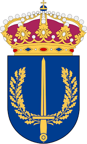
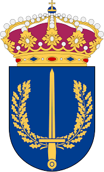

HYBRID SPACE-SUBMARINE ARCHITECTURE ENSURING INFOSEC OF TELECOMMUNICATIONS
HEIST will result in augmented threat detection, fault diagnosis and communication resilience for SCCs. Currently, the absence of submarine situational awareness data fusion delivers sparse fault localization, whereas HEIST will achieve meter- range precision. Impaired SCCs suffer days of downtime due to physical inspection and repair, whereas HEIST’s rerouting protocol enabled by the heterogeneous space and submarine communications architecture reduces downtime to hours. Developing new satcom advanced technology in high bandwidth free-space optical links and non-terrestrial networks will facilitate last-mile connectivity. A successful project will yield HEIST’s technology transition enabled by our regulatory and policy framework to NATO and commercial operators.
Learn more
Icelandic Parliament, Foreign Affairs Committee Chair
Swedish Armed Forces, Chief of the Royal Swedish Navy


 
